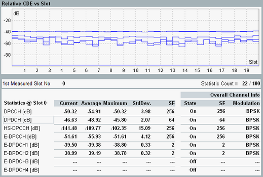

The relative code domain error (RCDE) results are displayed in one diagram per carrier and two tables.

Each RCDE vs slot value is determined by projecting the error vector onto the code domain. As defined by 3GPP, the error vector is calculated relative to the reference signal of the channel. In contrast to CDE vs slot results, for which the error vector is calculated relative to the entire composite reference signal.
The diagram covers a time interval of up to 120 slots with one measurement result per slot or half-slot. The RCDE of all uplink dedicated physical channels can be displayed simultaneously. A gap within a line indicates that the channel was not present (detected) during that time. See also "Dedicated Physical Channels".
The table to the left provides a statistical overview of RCDE single-slot results and the current spreading factor (SF).
- State:
On = channel on since start of measurement
Off = channel off since start of measurement
Var = channel has been on and off - SF:
<SF> = constant spreading factor <SF>
<SF> (Var) = varying spreading factor, <SF> is smallest value - Modulation:
BPSK / 4PAM = constant modulation type
4PAM (Var) = BPSK and 4PAM occurred
- Var values (instability)
- State = off for configured channels
- Unexpected SF or modulation type
In the configuration with dual uplink carrier, the scalar results appear in two individual views: statistics and channel info view. For an appearance, refer to "Selecting and Modifying Views".
For additional information, refer to "Common View Elements".